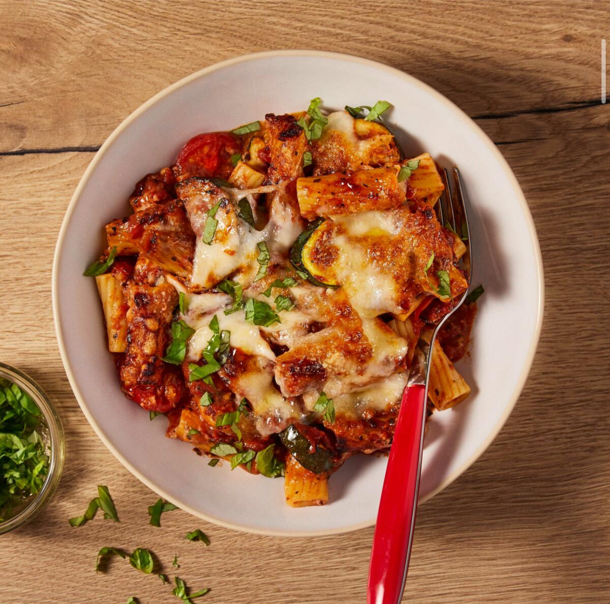

3 Cheese Veg Pasta Bake

3 Cheese Veg Pasta Bake
Pasta bake in a rich tomato sauce with vegetables, mozzarella, cheddar and parmesan. Serves 4.
Ingredients
- Tomato Passata (390g)
- Courgettes x2
- Cherry tomatoes (250g)
- Pasta (150g)
- Mozzarella (250g)
- Cheddar cheese (80g)
- Parmesan (40g)
- Tomato paste (32g)
- Balsamic vinegar (30ml)
- Parsley (10g)
- Garlic clove x4
- Vegetable stock (11g)
- Dried basil (2tsp)
Steps
- Preheat oven to 220C and boil a kettle. Peel and grate the garlic.
- Boil pasta for 8-10 mins or until cooked with a slight bite.
- Trim the courgettes and chop into bite-sized pieces. Add to a hot frying pan with olive oil and a pinch of salt and fry for 4 mins or until beginning to soften.
- Dissolve vegetable stock, dried basil, vinegar, tomato paste and 1tsp sugar in 170ml boiled water. Roughly chop the cherry tomatoes.
- Add the garlic to the frying pan once the courgettes are softening. Cook for 30s. Add the stock, cherry tomatoes and passata, and bring to the boil over a high heat. Season with black pepper and cook for 3-4 mins further.
- Grate the cheese and drain the mozzarella. Finely chop the parsley.
- Mix the pasta into the sauce with most of the parsley. Add half to an oven-proof dish, then top with the grated cheddar. Top with the remaining pasta mix and add the mozzarella and parmesan on top. Cook in oven for 5-10 mins.
Home